- York法はD.Yorkの計算法であり、最良の傾き、切片、標準偏差を持つ最善の直線について説明されています。
- FV法はGiocanniFasano & Roberto Vioによる計算方法で、両方の座標にエラーのある直線へのフィットについて説明されています。
- Deming回帰は、変数内誤差モデルの最尤推定であり、X/Y 誤差は独立して等分布していると仮定されます。
- XおよびYエラーの相関
 (York法のみ)
(York法のみ)
- X/Yの標準偏差(Deming法のみ）
与えられたデータセット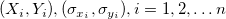において、Xは独立変数、Yは従属変数であり、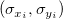はX,Yそれぞれのエラーを表します。 Xエラー付き線形フィットは、データを次の形式のモデルに適合させます。
| 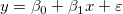 |
(1) |
|---|---|
| 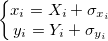 |
(2) |
(York法のみ)線形フィットを実行すると、分析レポートシートに計算された値が出力されます。 パラメータ表にはモデルの傾きと切片（カッコ内の数字は計算された値を示す）が表示されます。
xとyの重み（誤差）に関する を定義します。
を定義します。
| 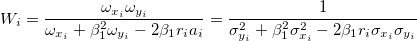 |
(3) |
|---|
このとき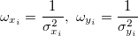は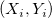の重みで、はXとYの誤差の相関係数(すなわち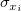と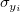)で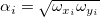です。
重みづけ（誤差）のないのフィット線の傾きは の初期値になります。設定した許容値に収まるまでこれらは反復計算されます。
の初期値になります。設定した許容値に収まるまでこれらは反復計算されます。
X_Y誤差のあるもっとフィットする線の推定パラメータ と
と の簡潔な方程式は次のようになります。
の簡潔な方程式は次のようになります。
| 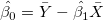 |
(4) |
|---|
| 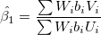 |
(5) |
|---|
ここで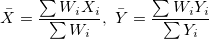です。
UとVはXとYの偏差です。
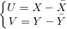
および、
| 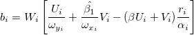 |
(6) |
|---|
パラメータの対応する変数 と標準誤差は次のようになります。
と標準誤差は次のようになります。
| 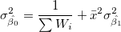 |
(7) |
|---|---|
| 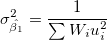 |
(8) |
ここで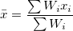、 は
は の推定値で、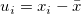です。
の推定値で、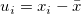です。
パラメータの標準誤差は最終的に次のようになります。
| 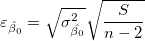 |
(9) |
|---|
| 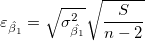 |
(10) |
|---|
ここで は
は
^2")
|
(11) |
|---|
回帰の仮定が成り立つ場合次のようになります。
 かつ 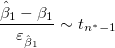 かつ 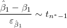
|
(12) |
|---|
フィッティングパラメータが0ではないことを調べるためにt 検定を使うことができます。これは、  (真ならば、フィット直線が原点を通る) または 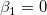 であるかどうかを検定します。t 検定の仮説検定は次のようになります。
(真ならば、フィット直線が原点を通る) または 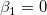 であるかどうかを検定します。t 検定の仮説検定は次のようになります。


 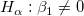
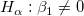 t 値は、次の式で計算できます。
 かつ 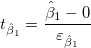 かつ 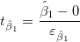
|
(13) |
|---|
計算されたt値を使って対応する帰無仮説を棄却するかどうかを決定できます。通常与えられた有意水準 に対して、
に対して、 のときに
のときに を棄却します。また、p値または有意水準がt検定とともに出力されます。p値がよりも小さい場合に帰無仮説を棄却することができます。
を棄却します。また、p値または有意水準がt検定とともに出力されます。p値がよりも小さい場合に帰無仮説を棄却することができます。
上記のt検定におけるが真である確率
)\,\!")
|
(14) |
|---|
ここで、tcdf(t, df) は、自由度 df を持つスチューデントt 分布の下側の確率を計算します。
t値から各パラメータの信頼区間\times 100\%") を次の式で計算できます。
を次の式で計算できます。
}\varepsilon _{\hat \beta _j}\leq \hat \beta _j\leq \hat \beta _j+t_{(\frac \alpha 2,n^{*}-k)}\varepsilon _{\hat \beta _j}")
|
(15) |
|---|
ここで と
と はそれぞれ上限信頼区間と下限信頼区間の略です。
はそれぞれ上限信頼区間と下限信頼区間の略です。
信頼区間の半値幅は以下の通りです。

|
(16) |
|---|
ここでUCLとLCLは、それぞれ上側信頼区間と下側信頼区間です。
より詳細は参考文献1（下記）をご覧ください。
| 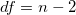 |
(17) |
|---|
nは合計ポイント数です。
| 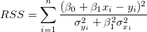 |
(18) |
|---|
| 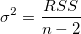 |
(19) |
|---|
単純な線形回帰では、xとyの相関係数は、r で表され、次の式に等しくなります。
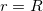  が正の場合 が正の場合
|
(20) |
|---|---|
| 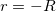 が負の場合
|
 これは次式のように計算されます。
これは次式のように計算されます。

|
(21) |
|---|---|
| 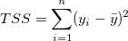 |
誤差の平均平方の平方根または、残差標準偏差は、次式に等しくなります。

|
(22) |
|---|---|
| 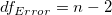 |
線形回帰における共分散行列は次のように計算されます。
 & Cov(\beta _0,\beta _1)\\
Cov(\beta _1,\beta _0) & Cov(\beta _1,\beta _1)
\end{pmatrix}=\sigma ^2\frac 1{SXX}\begin{pmatrix} \sum \frac{x_i^2}n & -\bar x \\-\bar x & 1 \end{pmatrix}")
|
(23) |
|---|
2つのパラメータ間の相関は、
=\frac{Cov(\beta _i,\beta _j)}{\sqrt{Cov(\beta _i,\beta _i)}\sqrt{Cov(\beta _j,\beta _j)}}")
|
(24) |
|---|
FV法はGiocanniFasano & Roberto Vioによる計算方法で、両方の座標にエラーのある直線へのフィットについて説明されています。
重みは次のように定義されます。
| 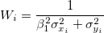 |
(25) |
|---|
重みづけ（誤差）のないのフィット線の傾きはです。
次のようにします。

|
(26) |
|---|---|
| 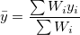 |
(27) |
合計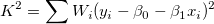を最小化し、偏微分を0に設定することで値 とを推定することができます。
とを推定することができます。
| 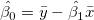 |
(28) |
|---|---|
| 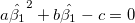 |
(29) |
ここで
| 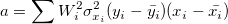 |
(30) |
|---|---|
| 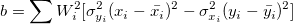 |
(31) |
| 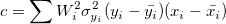 |
(32) |
設定した許容値に収まるまでは反復計算されます。
それぞれのパラメータの標準誤差については線形回帰モデルを参照してください。
より詳細は参考文献2（下記）をご覧ください。
線形フィットを実行すると、分析レポートシートに計算された値が出力されます。 パラメータ表にはモデルの傾きと切片（カッコ内の数字は計算された値を示す）が表示されます。
Deming回帰はxとyに測定誤差あることが前提とされる場合に使われます。
は、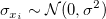と独立で同一の分布に従い、は、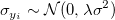と独立で同一の分布に従うと仮定します。 ここで、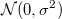は平均0と標準偏差 の正規分布を示します。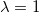の場合それは直交回帰です。
モデルの加重残差平方和は最小化され、
の正規分布を示します。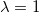の場合それは直交回帰です。
モデルの加重残差平方和は最小化され、
| 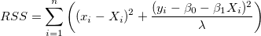 |
(33) |
|---|
パラメータを解くことができます。
| 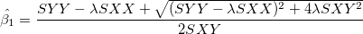 |
(34) |
|---|
|
(35) |
ここで、
| 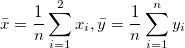 |
|---|

| |
|---|---|
さらに
パラメータの対応する変数は次のようになります。
")
|
|---|
パラメータの標準誤差は次のように推定できます。
|
(37) | |
|
(38) |
および、
回帰の仮定が成り立つ場合次のようになります。
| かつ
|
フィッティングパラメータが0ではないことを調べるためにt 検定を使うことができます。これは、 (真ならば、フィット直線が原点を通る) または であるかどうかを検定します。t 検定の仮説検定は次のようになります。
t 値は、次の式で計算できます。
| かつ
|
(38) |
|---|
計算されたt値を使って対応する帰無仮説を棄却するかどうかを決定できます。通常与えられた有意水準に対して、のときにを棄却します。また、p値または有意水準がt検定とともに出力されます。p値がよりも小さい場合に帰無仮説を棄却することができます。
上記のt検定におけるが真である確率
|
|
(39) |
|---|
ここで、tcdf(t, df) は、自由度 df を持つスチューデントt 分布の下側の確率を計算します。
t値から各パラメータの信頼区間を次の式で計算できます。
|
|
(40) |
|---|
ここでとはそれぞれ上限信頼区間と下限信頼区間の略です。
信頼区間の半値幅は以下の通りです。
|
|
(41) |
|---|
ここでUCLとLCLは、それぞれ上側信頼区間と下側信頼区間です。
より詳細は参考文献1（下記）をご覧ください。
|
(42) |
nは合計ポイント数です。
式(33)を参照
|
(43) |
単純な線形回帰では、xとyの相関係数は、r で表され、次の式に等しくなります。
| が正の場合
|
(44) |
|---|---|
| が負の場合
|
これは次式のように計算されます。
|
|
(45) |
|---|---|
誤差の平均平方の平方根は、次式に等しくなります。
|
|
(46) |
|---|---|
線形回帰における共分散行列は次のように計算されます。
 & Cov(\beta _0,\beta _1)\\
Cov(\beta _1,\beta _0) & Cov(\beta _1,\beta _1)
\end{pmatrix}=\begin{pmatrix} \ \sigma^2_{\hat{\beta_0}} & -\bar{x}\sigma^2_{\hat \beta _1} \\-\bar{x}\sigma^2_{\hat \beta _1} &\sigma^2_{\hat{\beta_1}} \end{pmatrix}")
|
(47) |
|---|
2つのパラメータ間の相関は、
|
|
(48) |
|---|
残差 vs. 独立変数の散布図プロットではそれぞれのプロットは別々のグラフに配置されます。
残差の散布図プロット vs. フィット結果
 vs. 順序
vs. 順序
残差のヒストグラムプロット
残差 vs. ラグ残差
残差の正規確率プロットは分散が成否分布しているかどうかを調べるために使います。結果のプロットはおおよそ線形で、誤差範囲は正規分布していると仮定することができます。プロットはパーセンタイル対順序化された残差をベースにしており、パーセンタイルは次のように仮定されます。
}{(n+\frac{1}{4})}")
ここで、n はデータセットの合計数で、iはi番目のデータを表します。 確率プロットとQ-Qプロットもご覧ください。